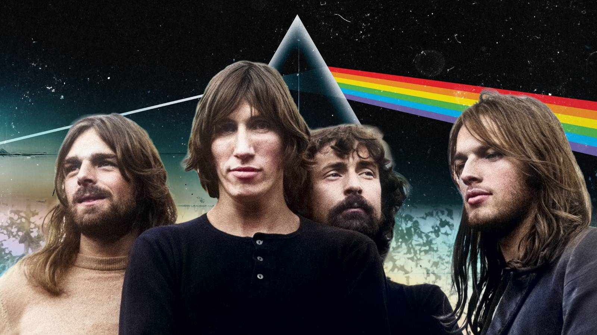

10 Rock Bands That Lost Their Magic When An Original Member Left
{kind=link}

If you think of your favorite rock acts, whatever era they might hail from, one constant is the special dynamic that forms among the original members when a band is at its peak. If they're making magic, both in the studio and onstage, it's a special chemistry that is not easily replaced.
It's precisely why history is littered with examples of acts that lost an original member, be it a vocalist or musician, and never quite recovered. There are the more obvious examples of bands that lost an iconic singer and tried to limp on with limited success. However, it's often true, regardless of the role (or instrument) the departing member played.
From interpersonal feuds to shocking tragedies, there are a bunch of different reasons why a band might lose an original member, and as it turns out, replacing that magic chemistry is never a sure thing.
Pink Floyd
Roger Waters
Pink Floyd is a fascinating example of this phenomenon, as they'd famously already lost founding member Syd Barrett in 1968. His departure even inspired many of the band's most famous songs, like "Wish You Were Here." However, it was the departure of Roger Waters in 1985 that officially ended the band's incredible artistic hot streak.
After Barrett's departure, bassist and singer-songwriter Roger Waters stepped up as the conceptual mastermind behind the band's most successful albums, including "Dark Side of the Moon," which went on to become the biggest-selling album of all time. By the time "The Wall" arrived in 1979, interpersonal tensions were high, and Waters departed several years later.
Waters never quite tapped into the same brilliance in his solo work, though for the remaining members of Pink Floyd, it was even worse. David Gilmour and Richard Wright soldiered on and recorded several albums together. Without Waters, though, Pink Floyd lost its anti-establishment edge, and they're now the very definition of a "legacy rock act".
Guns N' Roses
Slash
The electric dynamic that propelled Guns N' Roses to the staggering success of their debut, "Appetite For Destruction," was rocky and tumultuous from the start. Volatile vocalist Axl Rose had a habit of firing original members of the band at regular intervals, with drummer Steven Adler given his marching orders in 1990 and Gilby Clarke following several years later.
Tensions flared throughout the decade. By 1996, Slash grew tired of Rose's antics and departed along with rhythm guitarist Izzy Stradlin. Axl Rose was officially the last man standing from the original Guns N' Roses lineup.
The band floundered in the years that followed. The long-promised and eternally delayed follow-up to 1991's "Use Your Illusion" double album, "Chinese Democracy," grew into rock music's longest-running joke and failed to leave an impact when it finally arrived in 2008.
INXS
Michael Hutchence
Forming in Sydney, Australia, in the late seventies and hitting it big worldwide the following decade, INXS was led by charismatic singer-songwriter Michael Hutchence until his tragic death in 1997. Reflecting on rock acts who tried to keep the band together, with limited success, following the passing of an iconic lead vocalist, INXS inevitably comes to mind.
INXS laid low for the rest of the '90s, performing only a handful of shows with replacement vocalists. In 2000, the band performed with former Baby Animals frontwoman Suze DeMarchi alongside Noiseworks vocalist Jon Stevens. Later in 2002, Stevens joined as official vocalist, though the format didn't stick (he departed the following year before recording an album).
Determined to carry on, INXS even announced a reality television program in 2004, Rock Star: INXS, to help find a replacement vocalist. While one was eventually found in the form of J.D. Fortune, the early magic never returned, and the band is now in unofficial retirement.
Queen
Freddie Mercury
Queen is another act with a once-in-a-lifetime vocalist that tried to keep the band together after their leader's tragic passing. Freddie Mercury formed the band in 1970 alongside Brian May, Roger Taylor, and John Deacon, and gave his last performance as Queen in 1986 before passing away in 1991.
All four band members were crucial pieces of the puzzle that formed Queen, though their subsequent touring over the decades (with a cast of different replacement vocalists) never quite hit its stride. Over the past decade, though, former American Idol contestant Adam Lambert at least offered a comparable replacement in terms of energy and charisma.
Alice in Chains
Layne Staley
Personally, I've never been able to imagine seminal Seattle powerhouse Alice in Chains without the gravelly vocals of Layne Staley, which harmonized so perfectly with those of guitarist Jerry Cantrell. However, Stanley battled with drug addiction throughout his career and by the end of the '90s had retreated from public life. He tragically passed away in 2002.
The band took its time to reform, and in 2006, it replaced Staley with Comes with the Fall vocalist William DuVall, embarking on a US club tour fittingly titled "Finish What We Started." They've since released several fairly well-received albums and toured consistently, though the dynamite combo of Staley and Cantrell is nigh impossible to live up to.
Stone Temple Pilots
Scott Weiland
Things were unraveling between Stone Temple Pilots and their frontman, Scott Weiland, for years before his death from an accidental drug overdose in 2015. In 2013, the band had already fired Weiland after he'd attempted to embark on a 20th anniversary tour (only without his bandmates).
Stone Temple Pilots continued with several replacement vocalists following Weiland's death, including a stint with Chester Bennington from Linkin Park, plus their current lead vocalist, Jeff Gut. The band insists its legacy lives on, though again, it's difficult to imagine the band without Weiland's distinctive vocals.
Sublime
Bradley Nowell
Beloved Sublime frontman Bradley Nowell certainly could never be replaced following his tragic death in 1996, and this wasn't lost on the band's remaining members. Manager Jason Westfall publicly confirmed the band's retirement. "Just like Nirvana, Sublime died when Brad died."
Curiously, though, it appeared fans weren't prepared to just let things die. Surviving members Eric Wilson and Bud Gaugh played together in other bands, though they soon realized that Sublime tribute bands were pulling bigger crowds than they were. Eventually, they revived the act under the Sublime With Rome moniker in 2009 and released several albums.
The band's legacy continues on, and earlier this year, they announced they were working with Travis Barker and John Feldmann on their first album under their original Sublime alias since 1996.
The Pretenders
James Honeyman-Scott and Martin Chambers
The Pretenders might be a shadow of their former selves, following the drug-related deaths in 1982 of both James Honeyman-Scott, and Pete Fardon (founding guitarist and bassist respectively). However, it's something that founding vocalist Chrissie Hynde is not shy to admit.
“I know the Pretenders have looked like a tribute band for the last twenty years, and actually, they are a tribute band,” Hynde quipped upon the band's induction into the Rock and Roll Hall of Fame in 2005, paying tribute to her dearly departed bandmates, "without whom we wouldn't be here."
"On the other hand, without us, they might have been here, but that's the way it works in rock 'n' roll."
Faith No More
Jim Martin
This one is a little less cut and dry, as the incredible energy and showmanship of Mike Patton represents the core appeal of Faith No More for many fans. Nonetheless, guitarist Jim Martin played a critical role in the band's most enduring material, including "We Care A Lot," "Introduce Yourself," and their 1989 breakthrough effort "The Real Thing."
Tensions flared, though, during the recording of 1992 follow-up "Angel Dust." The pressure was on to replicate their massive success, and Martin clearly wasn't feeling the musical direction they'd taken, contributing guitars to the album under duress.
Martin wasn't making any friends inside the band, and, in 1993, he was notoriously let go from responsibilities via fax. The band soldiered on with a replacement guitarist for "King For A Day, Fool For a Lifetime" in 1995, though I'd argue the same quirky energy wasn't quite there. The band eventually called it quits in 1998.
The Red Hot Chili Peppers
John Frusciante
This inclusion is a feisty one, as guitarist John Frusciante was often absent from The Red Hot Chili Peppers' lineup over the decades. However, there is a solid argument to be made that there is a particular special (red hot chili) sauce only present when Frusciante is part of the band.
Coming and going from the roster over the years, Frusciante has been part of the Red Hot Chili Peppers across several different eras, including their breakthrough run that included the seminal "Blood Sugar Sex Magic" in 1991, as well as the latter hot streak that included "Californication," "By The Way," and "Stadium Arcadium".